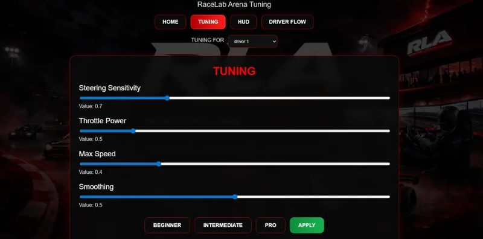

Time Attack
Find the fastest repeatable lap.
Physical gaming / Perth
A planned customer journey built around a professional Race Console, a live onboard camera and a real physical RC vehicle on track.
The experience flow is being designed to make an advanced technical system feel clear, focused and approachable.
Confirm the driver and prepare a session profile. Public check-in details remain in development.
Select a planned control mode suited to experience and confidence.
Sit at the professional simulator rig and prepare the Drive Input.
See the real physical track through the RC vehicle's onboard camera.
Steer, accelerate and brake the real RC vehicle from the simulator.
Take on a planned timing, precision or team-based format.
Use lap timing and session data to understand the drive.
Live onboard FPV
The Race Console displays a live feed from the camera mounted on the real RC vehicle. You judge braking points, positioning and track limits from inside the physical drive.
This is not a pre-rendered game world. The track, obstacles and vehicle movement are physical.
See the complete system
Every mode below is planned or in development. Final rules and availability are not confirmed.
Find the fastest repeatable lap.
Prioritise control and accuracy.
Challenge a RaceLab benchmark.
One focused attempt under pressure.
Maintain control as conditions tighten.
Defend the leading result.
Share the Race Console and combine results.
Control for different confidence levels
Planned Beginner, Intermediate and Pro profiles will shape vehicle response for different drivers. Final profile behaviour will be determined through prototype testing.
Age requirements, safety rules and speed controls are also still being validated and will be published before public availability.

Experience interest
Register for future demo and public experience updates. No payment or booking is taken.